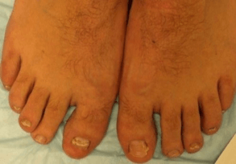

Tybetańskie praktyki w leczeniu grzybicy paznokci
Legendy o skuteczności medycyny tybetańskiej krążyły oddawna. Jej odkrycia w dziedzinie uzdrawiania są naprawdę wyjątkowe i zasadniczo różnią się od praktyk innych kultur. Kompozycje leków są różnorodne i zaskakują nieoczekiwaną kombinacją, ponadto wszystko, co powstaje w ramach medycyny tybetańskiej, jest całkowicie naturalne. Dotyczy to również leków przeciwgrzybiczych. Przy całej różnorodności tej choroby, praktyki tybetańskie skutecznie radzą sobie z każdym rodzajem grzybicy paznokci.
Rodzaje grzybicy paznokci
Istnieją 4 główne rodzaje grzybicy paznokci:
W zależności od gatunku grzybicę infekcja dzieli się na 4 grupy:
Dystalna lub dystalno-boczna grzybica paznokci - to najczęstszy rodzaj grzybicy paznokci. Z krawędzi płytki paznokcia grzybica przenika pod łożysko paznokcia, w związku z czym paznokieć zmienia kolor, zaczyna się kruszyć i staje się cieńszy.
Proksymalna podpaznokciowa grzybica paznokci - to rzadki rodzaj grzybicy paznokci. Zakażenie następuje od strony oskórka, a następnie przenosi się do dolnej części paznokcia. W tym przypadku biała plamka z dolnej części paznokcia rozprzestrzenia się na cały paznokieć.
Powierzchowna biała grzybica paznokci - przejawia się w postaci białych plam, pasków na płytce paznokcia, które przechodzą od tylnej części paznokcia do wolnej krawędzi. Z czasem powiększają się, rosną i stają się żółte.
Totalna dystroficzna grzybica paznokci niszczy całą płytkę paznokcia, podczas czego paznokieć staje się bardzo gruby, zmienia kolor i kształt.

Leczenie grzybicy paznokci w Tybecie
Zakażenie grzybicze - niezwykle uporczywa choroba wymagająca długotrwałego intensywnego leczenia. Tradycyjne maści i kremy, których działanie nie trwa dłużej niż 10-15 minut po całkowitym wchłonięciu, mogą opóźnić proces leczenia o miesiące, nie niszcząc w końcu wirusa. W Tybecie w walce z grzybicą paznokci od wielu stuleci stosuje się podejście kompleksowe. Kompresy nasączone mieszaniną roślin leczniczych są przez cały miesiąc noszone przez pacjenta, po czym wirus grzyba paznokci całkowicie znika.
W naszym czasie niektóre produkty medycyny tybetańskiej są z powodzeniem eksportowane na cały świat. Wśród nich są i leki przeciwgrzybicze. - to naturalny lek oparty na tybetańskich praktykach w leczeniu grzybicy paznokci. krem w pełni odtwarza starożytną metodę leczenia grzybicy, będąc jej nowoczesną kopią. Formuła stosowana od wieków przez tybetańskich mnichów nie została zmieniona w leku i jest stosowana w oryginalnej formie.
Udowodniono klinicznie, że leki medycyny tybetańskiej są 5 razy bardziej skuteczni w leczeniu grzybicy niż jakikolwiek inny tradycyjny lek.

krem ma 100% naturalny skład i
obejmuje:
1) CHAMOMILA RECUTITA FLOWER EXTRACT - to naturalny atibiotyk o
działaniu przeciwgrzybiczym i zapewniającym gojenie się ran.
2) BUTYROSPERMUM PARKII BUTTER, który wzmacnia układ
immunologiczny, poprawia krążenie krwi, łagodzi proces zapalny.
3) PINUS SYLVESTRIS LEAF OIL przyspiesza proces gojenia
się tkanek, usprawnia proces regeneracji komórek.
4) MELALEUCA ALTERNIFOLIA LEAF OI działa zmiękczająco, łagodzi skórę,
leczy pęknięcia skórne.
5) PROPOLIS EXTRACT szybko łagodzi swędzenie i
ból.
Grzybica paznokci jest jedną z najbardziej ospałych chorób, których rozwój zwykle pozostaje niezauważony. Jednak nieuwaga do własnego zdrowia często ma najbardziej nieprzyjemne konsekwencje. Ponad 70% osób zarażonych wirusem i nieleczących choroby traci paznokcie całkowicie lub częściowo. Dbaj o siebie i bądź zdrowy!
Dzisiaj w walce z grzybicą stóp krem - jest jednym z najbardziej skutecznych leków. Różnica polega na tym, że oprócz samych objawów grzybicy ma natychmiastowy kompleksowy efekt terapeutyczny w obu obszarach problemowych (stopa i paznokcie). krem ma silne działanie przeciwzapalne, przeciwdrobnoustrojowe i lecznicze, wzmacnia układ immunologiczny. Ostatnio zacząłem polecać go moim pacjentom zarówno do leczenia, jak i zapobiegania grzybicy stóp, i już otrzymuję pozytywne recenzje na ten temat.





 (Oceń)
(Oceń)